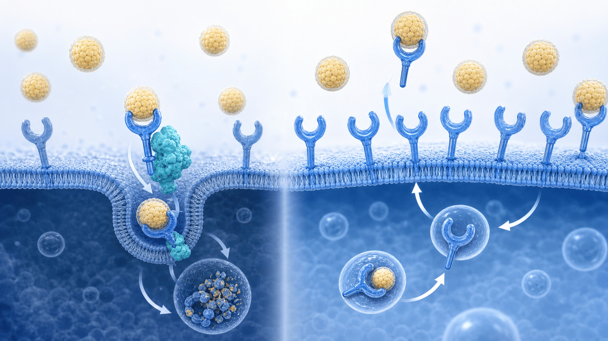
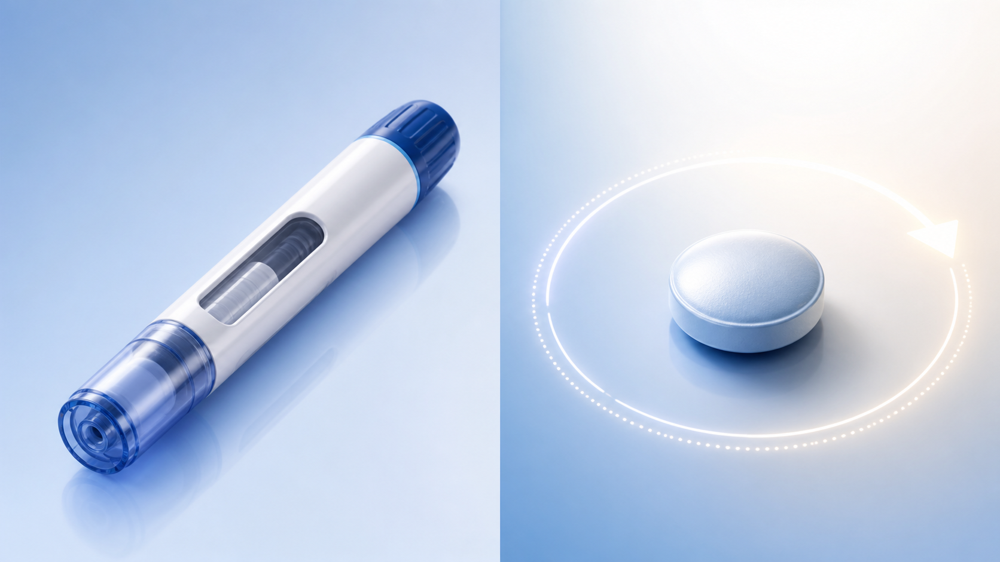

아직 임상시험 초기 단계인 '경구 PCSK9 억제제' 후보 이야기 — 지금 처방되는 약은 아닙니다
PCSK9를 막으면 간이 나쁜 콜레스테롤을 더 잘 치웁니다

같은 치료 원리를 알약으로 구현할 수 있는지 시험 중입니다

약이 실제 심장병을 막는지 확인한 연구는 아닙니다
기존 스타틴 치료에 후보약을 더한 짧은 시험 결과입니다
짧고 작은 시험에서 중대한 부작용은 보고되지 않았습니다
유망한 후보약이지만 지금 처방받을 수는 없습니다
QR을 스캔하면 같은 자료를 휴대폰에서 다시 열 수 있습니다